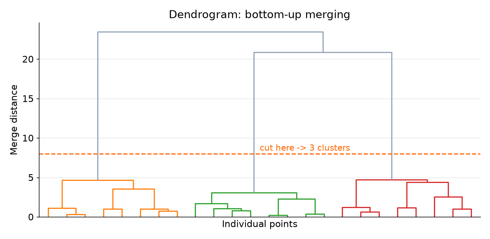
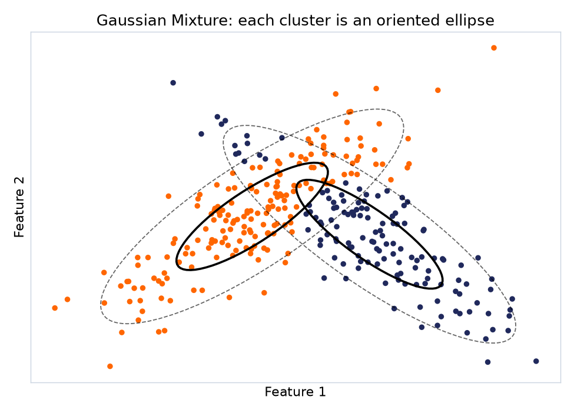
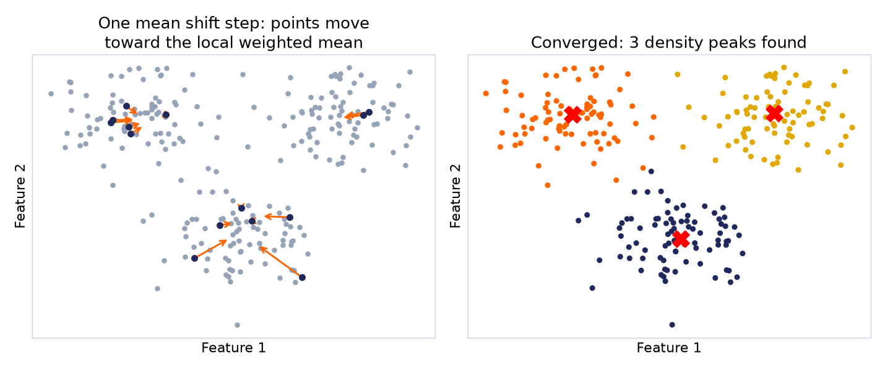
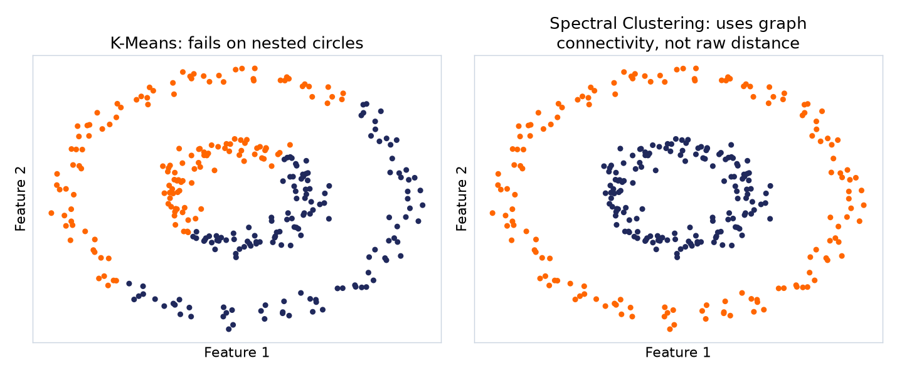

در ادامه چهار رویکرد دیگر را میبینیم؛ نه برای یادگیری کامل در همین جلسه، بلکه برای اینکه بدانید هر کدام از چه زاویهای به مسئله نگاه میکنند و کِی ممکن است سراغشان بروید.




| الگوریتم | ایدهی اصلی |
|---|---|
| K-Means | فاصله تا مرکز خوشه |
| DBSCAN | مناطق متراکم |
| Hierarchical | ادغام مرتب از پایین به بالا |
| Gaussian Mixture | ترکیبی از توزیعهای نرمال |
| Mean Shift | حرکت بهسمت قلهی چگالی |
| Spectral | گراف شباهت و مقادیر ویژه |
| ویژگی | K-Means | DBSCAN |
|---|---|---|
| نیاز به تعداد خوشه از قبل | بله | خیر |
| مبتنی بر Centroid | بله | خیر |
| عملکرد روی خوشههای با شکل پیچیده | ضعیفتر | بهتر |
| تشخیص نویز | خیر | بله |
| پارامترهای اصلی | n_clusters | eps, min_samples |
| حساسیت به مقیاس ویژگیها | زیاد | زیاد |
جواب هر سه را در همین جلسه دیدیم؛ هدف این است که بتوانید «چرا»یش را توضیح دهید، نه فقط نتیجه را.
وقتی برچسبی در کار نیست، مدل بهجای یاد گرفتن یک جواب، دنبال یک ساختار پنهان میگردد.
این ساختار همیشه یک جواب قطعی درست ندارد؛ و همین، خودِ درسِ این هفته است.